Investing in our habitat, knowledge and progress. —
Investing in our habitat, knowledge and progress. —
Based in New York
00:44 (UTC +3)
Get connected
Get connected
About
Nightfall Ventures is a venture capital firm that invests in early-stage, frontier technology companies that address existential challenges, with a specific focus on climate tech.
Get connected
Get connected
Sound
Contact
info@nightfall.vc
Nightfall Ventures is a venture capital firm that invests in early-stage, frontier technology companies that address existential challenges, with a specific focus on climate tech.
© 2023